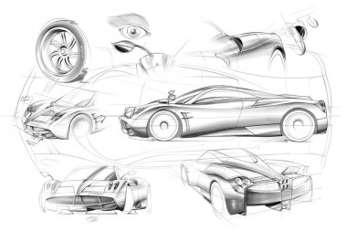
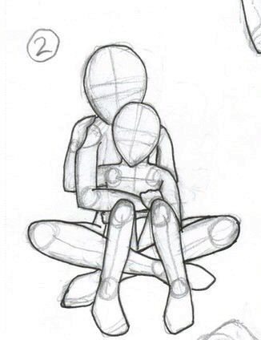
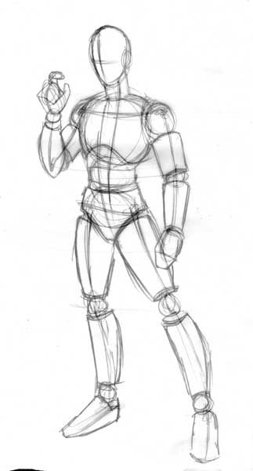
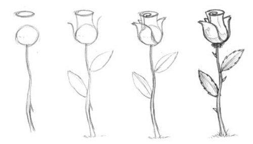
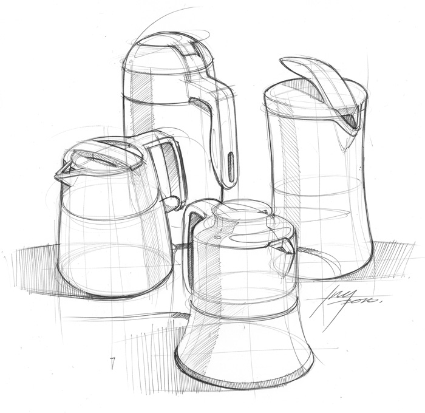
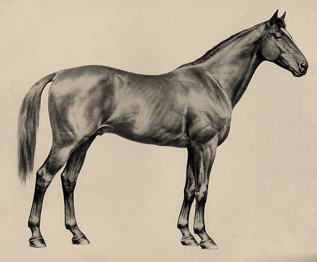
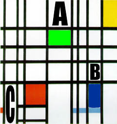
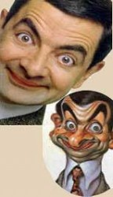
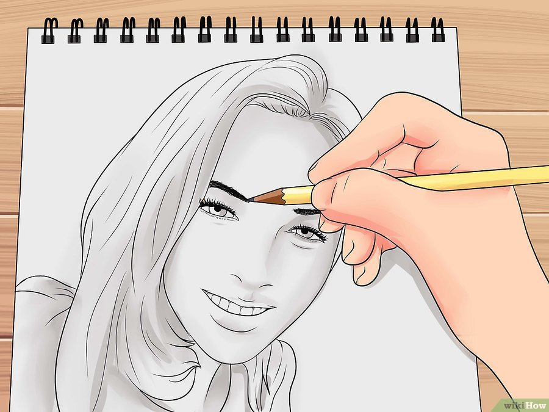
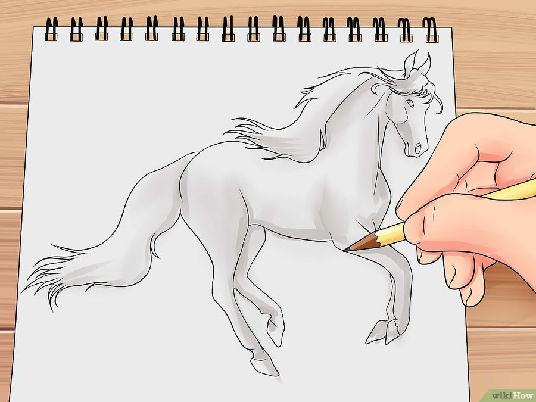

|
Quieres ir al final de la pagina |
| Nosotros te enseñaremos las distintas formar de aprender a dibujar, para empezar esto te pedire que veas el video ya que son unos conseptos basicos de como podrias aprender a dibujar mejor Una ves visto el video ya estaras masomenos preparado para ponerte a practicar asi que comensemos, mas a delante de esta paguina te enseñaremos ejemplos y tecticas para que te resulte mas facil aprender a dibujar |
¿Como hacer bocetos y que son? |
| Derivado del término italiano bozzetto, el concepto de boceto refiere al esquema o el proyecto que sirve de bosquejo para cualquier obra. Se trata de una guía que permite volcar y exhibir sobre un papel una idea general antes de arribar al trabajo que arrojará un resultado final. Por lo general, un boceto (definido como layout en idioma inglés) es una ilustración esquemática que carece de detalles y, en la mayoría de los casos, no posee terminaciones. Su objetivo es simbolizar ideas, pensamientos o conceptos, sin preocuparse por la estética. Por eso, generalmente se realiza sobre cualquier clase de hoja y sin necesidad de disponer de instrumentos de dibujo auxiliares Ahora para hacer un boseto es muy sensillo solo tienes que hacer unos pequeños trasos en una hoja de lo que vayas a dibujar, no tienes que ser exactamente igual solo que se paresca y no te preocupes si queda bien o no con la practica incluso tus bocetos se pareceran al dibujo principal. Aqui mas ejemplo de bocetos |
 |
|  |  |  |  |
Estilos de dibujos |
Pulse aqui para descargar mas informacion |
| Las características de estos estilos de dibujos son básicamente superficiales, el dibujo monumental se basa en ilustraciones que representan construcciones históricas. El de tipo abstracto podemos decir que es una expresión que no intenta representar el mundo en el cual vivimos, ni a objetos reconocidos; éste abandona cualquier referencia artística que conocemos. Al dibujo artístico lo hemos mencionado muchas veces en nuestro sitio, es una representación gráfica que puede o no comprender objetos o escenarios reales, tiene una identidad propia como obra en sí o como concepto en todas las demás artes (escultura, pintura, arquitectura) Pss. ¿Quieres saber mas sobre estilos de dibujo? has click aqui |
 |
Abstraccionismo GeométricoEl abstraccionismo geométrico forma pare de los estilos de dibujo, éste trata de romper la representación figurativa de la realidad para brindar un lenguaje visual plagado de significados; éste dibujo puede estar compuesto desde trazos horizontales, verticales o diagonales o por simples planos monocromáticos. Con el juego de los trazos también se crea la sensación de intersección o superposición, de debilidad o fuerza, movimiento o ilusión, etc.; suele expresar características de los objetos como la profundidad o perspectiva. Este nuevo estilo de dibujo ha surgido como consecuencia del abstraccionismo, como el Neoimpresionismo surgió del Impresionismo; si se utiliza el color en esta clase de grafismos se pueden lograr efectos interesantes tales como dirección, grosor, presión, tensión, complejidad, intensidad, etc. El color puede influir indistintamente en cada ser humano por experiencias previas o simplemente por gusto. |
 |
CaricaturasDentro de los estilos de dibujos, el que más popular se ha vuelto es el “caricaturesco”; la caricatura ha sido desde el comienzo de su historia una representación exagerada de los personajes o hechos. Su fin es poder transmitir un mensaje o idea de forma sarcástica sobre una cuestión determinada. Es por eso que para que la tarea tenga éxito se necesita realizar trazos bien expresivos, pero a su vez, éstos deben ser lo más simples posible. Los primeros ejemplos de caricaturas los encontramos en el antiguo Egipto aunque parezca mentira; allí en diferentes papiros, aparecen representados varios animales como el león, asno, el mono y el cocodrilo, tocando instrumentos dentro de un lujoso ambiente. Es muy famosa también la escena de la rata sentada en un trono recibiendo como ofrenda una flor de loto por parte de un gato. Ese estilo de dibujo surge en distintos países de diferentes formas, en Alemania aparece recién en el siglo XIX con Chodowiecki, quien cita dibujos burlescos y fantásticos; en Inglaterra, la misma se hace presente durante los siglos XVII y XVIII, copiando a la holandesa debido a su cercanía comercial; ambas caricaturas mantienen un contenido moral que luego tomará aires políticos. |
 |
¿Como puedo mejorar en los dibujos? |
Dibuja figuras.Prueba dibujar las cinco figuras básicas. Las cinco figuras básicas son: esfera, pirámide, rectángulo, cilindro y cono. Todos los dibujos se derivan de estas cinco figuras básicas. Dibuja las figuras en diferentes tamaños, proporciones y ángulos Práctica el sombreado con las figuras y la iluminación desde diferentes direcciones. Esto te capacitará para dibujar más formas complejas en el papel, no te impacientes. Usa diferentes herramientas de dibujo, como lápices de diferente grosor, bolígrafos, lápices de colores, carboncillos, etc. Esto te ayudará a aprender a manejar las herramientas distintas. |
Dibuja diseños simples.Cuando te sientas seguro dibujando formas podrás empezar a combinarlas. Dibujar un cilindro con un cono en la parte superior del mismo o esferas de enclavamiento hará que avances hacia dibujos muy complejos de una manera sencilla. No presiones demasiado al usar un lápiz. Te permitirá borrar los errores con facilidad a medida que avanzas. Normalmente también querrás averiguar las proporciones y las formas en el dibujo antes de comenzar el oscurecimiento en las líneas. Cabe repetir que debes usar diferentes herramientas de dibujo para determinar cuál va mejor contigo. |
Practica el sombreado.Cuando una forma cambia, también lo hace el valor (grado de oscuridad o la luz que se encuentra en ese lugar). La manera de hacer que algo parezca verdaderamente 3D y darle mucho peso es aplicar valores (sombreado) a la misma. Inicia sombreando las formas simples y luego aplica las ideas a combinaciones más complejas. Sombrea en una sola dirección. Sin embargo, si bien sombrear en una sola dirección (como en línea recta) es bueno para algunos diseños, para otros como animales u hojas, sombrear a lo largo de las curvas hace que resalten incluso más. Si no sombreas con los contornos de un objeto, le estarás dando al cerebro dos ideas diferentes de cómo una forma dada debe verse y el resultado hará que no se vea bien. |
Pide ayuda y consejo.No creas que debes evolucionar tu artista interno por tu cuenta. Pídele consejo a otros artistas, profesores de arte, amigos o cualquiera en quien confíes. Escucha sus sugerencias para mejorar las áreas de tus habilidades que lo requieren y aprender nuevas formas de hacer arte. |
Dibuja sobre la vida constantementeEste es el ejercicio fundamental que entrenará tus habilidades de observación y construirá tu habilidad como dibujante inmensamente. Las fotografías no son ideales en comparación a la vida, una fotografía aplana la perspectiva, puede distorsionar y también quita el sentido de la proporción. Ver un avión de combate en una foto es una cosa, ver qué tan grande es en la vida real es otra. |
|  |  |
¿Quieres saber la historia de los dibujos? preciona el boton |